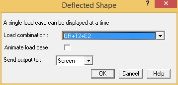
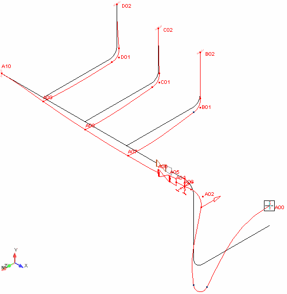

.jpg) Select Result > Interactive
> Displacement.
Select Result > Interactive
> Displacement.
- The Deflected Shape dialog is displayed.

- Select GR+T2+E2 from the Load Combination field, and then press OK to accept the remaining defaults. A deflected shape plot of the model is displayed as shown below.
The red line is a scaled representation of the deflections. This line can be used to illustrate points of concern.
- Pick point A01 N to review actual deflections at that point.
- Move the displacement dialog to the side of the modeling area so that you can see both the point information and the model. Press the Pg Up key several times to scroll through displacement results from different loads and load combinations. Notice the level of information available in the dialog.
- Close the Displacement review.
| Note: |
The toolbar buttons that look like “VCR” controls can also be used to navigate through the load combinations. These buttons can be used to see deflected shapes of other loads prior to clicking on a point. Once the Point A01N is selected, these keys emulate the Page Up and Page Down keys. |